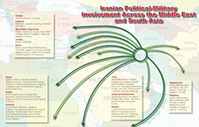

| Home About Dore Gold Bookshelf Media Updates on Iran Further Reading Jerusalem Center for Public Affairs |
EXCLUSIVE: Gold Says UN Working with Iran to Hide Nuclear ProgramEarlier this week, HUMAN EVENTS Editor Jed Babbin talked to former Israeli Ambassador Dore Gold about his new book, �The Rise of Nuclear Iran.� Jed Babbin: Let�s go right to it. Why this book? Why Now? Dore Gold: Well, there has been over the last number of years broad agreement across the Western Alliance that Iran must not obtain nuclear weapons. JB: But no one has really done anything. DG: There are now two problems that are now emerging. Number one it seems that the west as a whole has lost its will to implement that policy. And number two, everyday that goes by the centrifuges are spinning, increasing the stock of enriched uranium in Iranian hands. In short, the Iranians are getting closer to their goal. JB: And you have no doubt about their goal that it is to develop nuclear weapons? DG: Well in The Rise of Nuclear Iran I look at a lot of the public evidence that is out there, including the reports of the International Atomic Energy Agency. One of the most interesting developments that occurred a number of years ago was when CIA got control of a Iranian engineer�s laptop which had warhead designs for a nuclear device including triggers for a nuclear explosion and calculations at what height that explosion should occur. It left no doubt in the minds of those studying these diagrams that they were developing a nuclear warhead. What added even further credibility to the American intelligence material was the fact that the International Atomic Energy Agency convened a special session of senior diplomats from around the world in Vienna and reported on these findings so that even the IAEA, which has dragged its feet on the Iranian file, accepted the American intelligence reports and adopted them. They validated them and adopted them. JB: Didn�t el-Baradei the outgoing head of the IAEA, say just a couple of months ago that he had a gut feeling that Iran was trying to acquire nuclear weapons and technology? DG: The IAEA has a troubled history with the Iranian file. Its reports which come out every few months will give you details about the amounts of uranium hexafluoride or the amounts of low-enriched uranium that are in uranium stocks. Anyone reviewing this material will understand the gravity of the situation, but for political reasons Mohamed el-Baradei and the senior staff at IAEA refused to draw conclusions over many years that would charge Iran as being in breach of the Nuclear Non-Proliferation Treaty. And only rather late in the game did the IAEA actually refer the Iranian file to the UN Security Council. JB: I don�t think that anyone doubts at this point that the IAEA has been an apologist for Iran for more than a decade. But now we have this revolutionary statement by el-Baradei that he thinks they want to have some nuclear weapons technology and I can�t for the life of me think of why anyone would want nuclear weapons technology except to build nuclear weapons. DG: Well right, and el-Baradei only made that admission when he was leaving his post. In other words, in all the years he was giving the Iranians a pass, he wouldn�t say it. JB: We also have another situation coming up don�t we? The IAEA apparently has further intelligence information that it has gathered regarding the development of nuclear weapons in Iran. And right at this moment they are refusing to divulge that to the US, Britain and other nations. DG: As I said the IAEA is a useful receptacle of tremendous amounts of material on the Iranian nuclear program but they are slow in reaching conclusions and many times they are willing to work with the Iranians in hiding some of the most incriminating evidence of what the Iranians are up to from the west. JB: In terms of the Iranians� lack of truthfulness, one of the things that you stress in your book -- and I think it is very important regarding where we are on Iran these days -- is the fact that diplomacy does not seem to work with Iran. I keep asking people, has there ever been a successful negotiation in which a western nation or group of nations has actually changed the behavior of this regime since 1979? I can�t think of one, can you? DG: No, I think you are absolutely right. First of all the Iranians have a whole other concept of diplomacy than we understand in the west to be the proper diplomatic technique. When western nations sit with each other and negotiate they try to achieve a win-win situation, they try and reach compromise. It is very important for western diplomats to develop a relationship of candor with one another, a certain degree of trust. There may be different interpretations of international law or of UN resolutions that create disagreement but there has to be a bottom line of working with the other side to reach an agreement. The Iranian view of diplomacy is very different. First of all, they, for the Iranians the purpose of diplomacy is to advance the national security interest of Iran period. The use of deception, even if it undermines trust, is completely valid from an Iranian perspective. Ayatollah Khomeni in his famous book Islamic Government calls on Iranians in the future to use �taqiya� -- which is deception -- in their relations with others. Taqiya evolved under the Shiites as a doctrine that permitted the Shiites to say one thing when they mean the exact opposite as a vehicle for surviving in a Sunni dominated world. But it has been adopted as the main modus operandi of Iranian diplomats since the Islamic revolution. JB: So in terms of the EU-3, Britain, France, Germany, negotiating the as you might call it the Iran nuclear portfolio for four or five years they got nowhere. Now is there any prospect for any further progress, any progress for diplomacy in the next few years? DG: I think the EU-3 negotiations with Iran are extremely important to study and to draw lessons from. In fact the EU pursued a policy of engagement with Iran beginning in 2003 and concluded two agreements with the Iranians that were intended to temporarily suspend Iranian enrichment. But the whole purpose of that diplomatic exercise from the Iranian perspective was ultimately revealed to be totally different from what the Europeans were trying to achieve. And in my book I bring forward, I present a statement made by the chief Iranian nuclear negotiator, Hassan Rowhani, in a private meeting in Tehran in which he said while we negotiated with the west we completed one of our Iranian production plants in Isfahan, where Iranian conversion was done. When they started negotiations they had no Isfahan plant by the time they finished negotiations with the EU-3 the Isfahan plant was up and running and already converting yellow cake into Uranium hexafluoride gas. JB: Good grief. Well there�s progress for you. DG: But what�s important is that the Iranians admitted that they had deceived the west. When this material came out, and it appeared in the Daily Telegraph, the British Daily, Conservative Daily wrote �How we Duped the West� by Iran�s chief negotiator. And that�s a very accurate description of what he was saying. So they take pride in duping the west and the west apparently is incapable of reacting in terms of how to solve the fact that they have been duped. To rebel against it, to force some further disclosure. I think what happens is the west refuses to acknowledge what has happened and therefore keeps trying to engage over and over again with Iran. Presently the Obama administration supports the policy of engagement with Iran and is supposed to re-assess engagement sometime in late September with the convening of the UN General Assembly in New York. Hopefully Washington will learn the lessons of past efforts of engagement and reach the conclusion that it is not going to work this time. JB: Well the lessons being learned in Washington certainly do not seem to be helpful. Let me just give you as an example Mr. Obama�s speech in Cairo back in June. In effect by saying that no nation should be able to say to another whether or not they should have nuclear technology and nuclear programs, President Obama gave a green light to the Iranian nuclear program and removed any prospect for more diplomatic sanctions against it for their nuclear program. And I�ll add to that the second part of it: he says that as long as they obey the Nuclear Non-Proliferation Treaty we should not be able to tell them what they can and cannot do which seems to be a rather Utopian and unrealistic way of looking at this. What is the effect of Mr. Obama�s Cairo speech? DG: Well there actually have been other US statements that move in different directions. And I think that President Obama�s Cairo speech allows interpretations in different directions. For example, Senator John Kerry tried putting forward a trial balloon in the Financial Times a few months ago in which he said the United States should accept civilian level enrichment of uranium in Iran and just put adequate controls over that enrichment process. Of the difference between the civilian level enrichment, low enriched uranium and military grade uranium or highly enriched uranium may seem a lot. One is a level of five percent U-235 and the second is at ninety percent U-235 but the leap is very small in terms of the amount of effort that has to be undertaken to reach military level of U-235. JB: If I can interrupt, more importantly I think is the fact that you don�t know what is going on unless you have no notice presence of limited inspections which the west has never had and never will have. So all of this seems to be built on a house of cards. DG: We already have, in the case of North Korea, an IAEA inspection protocol in place and the North Koreans simply evicted the inspectors and began the process of taking the spent fuel rods from their reactor and producing weapons grade plutonium. So we have already seen how North Korea exploited the IAEA inspection system and affected a policy of break out. There is no reason why Iran cannot do the same and that is one of the scenarios which all western powers have to very carefully take into account when they put forward proposals to permit Iranian enrichment of uranium. JB: In terms of the prospect for diplomacy I think everyone would agree that there is a fairly limited window to accomplish something before the Iranians achieve nuclear weapons. What is your forecast? What do you think is going to happen? Is there a prospect of sanctions under the UN regime that might actually have any effect? DG: I think that to get a consensus in the UN Security Council and further action on Iran is going to be extremely difficult because of the Chinese and Russian interests. Actually Western Europe today is much more hard line on Iran than it ever was in the past. Under Sarkozy in France and Merkel in Germany there is a readiness to go forward with a much more strict regime sanctions. Now unless sanctions are ratcheted up significantly so that they will also have an effect on the import of refined petroleum products like gasoline and to Iran they will probably have little impact on Iranian decision making. The other factor that is critical to have an impact on Iran is leaving a military option on the table. Because, in my book, I demonstrate how the Iranian fear of being hit by the west actually did effect their calculations back in 2003. JB: Let me ask you something you may not want to answer. It seems that Israel is clearly considering at least, if not planning, a military strike against Iran�s nuclear facility. A couple months ago our mutual friend John Bolton predicted that there was 80 to 90 percent chance of an Israeli military strike on Iran before the end of calendar 2009. What do you think is going to happen before the end of this year? DG: Well Israel clearly prefers that the international community will understand that Iran is a global threat and not just a threat to Israel and will act accordingly. But as a former Israeli diplomat I would prefer not to get into any speculation about Israeli military options. JB: You are the diplomat, you�re the scholar, Ambassador Gold. I am not. Two final things then we will wrap this up. In the re-election of Ahmadinejad and since he has spoken a great deal about the return of the Mahdi, the so-called lost twelfth Imam. My understanding -- and I am certainly no scholar of comparative religion -- I am not aware of any other religion that believes, number one that it can precipitate by the act of man a return of the deity to earth and, number two, that they can do this by an apocalyptic event. Am I reading too much into Mr. Ahmadinejad and Mr Khamenei or is the apocalypse a career objective for these guys? DG: It is significant that Ahmadinejad has said on repeated occasions that one of the purposes of his government is to accelerate the arrival of the hidden Imam who comes as the Mahdi the chosen one to redeem the world for Shiite Islam. And he has said that the acceleration of the end of days is achieved through creating global chaos. When I did research on �The Rise of Nuclear Iran� I wanted to understand whether this was Ahmadinejad�s own thesis or whether it was more widespread. And in the chapter where I deal with this subject I reach the conclusion the Mahdism is actually a widely held belief among many significant individuals in the Iranian security apparatus including officials very close to the supreme leader Khamenei and especially in the senior command of the revolutionary guards who have control over missile programs and nuclear research. JB: Thank you very much for writing this Ambassador Gold this is an eye-opener and quite frankly something that should scare a lot of people into taking action instead of just talking. http://www.humanevents.com/article.php?id=33294 |
Buy the Updated Paperback Edition  Maps Portraying the Iranian Threat
|
|
Home Bookshelf About Dore Gold Media Updates on Iran Further Reading Jerusalem Center |